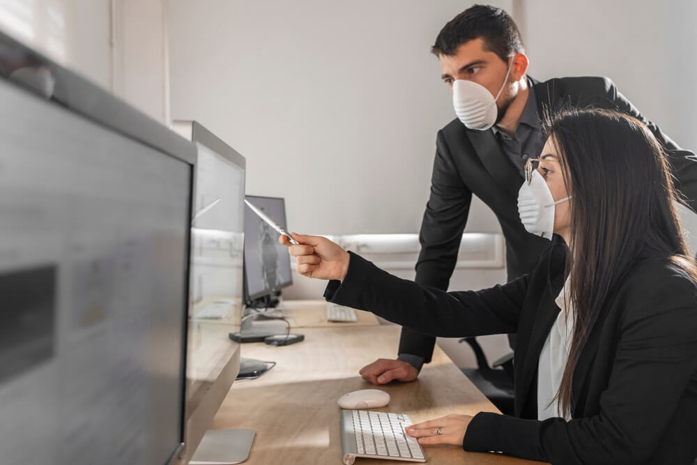

Com um mercado estável e com boas visões de renda relativa à empresa, muitos estabelecimentos de grande e, principalmente, pequeno e médio porte se mantinham firmes nessa concorrência espacial, cada qual com seu nicho, gastos calculados e renda positiva. Em um mundo anterior à pandemia, não se via problemas em tomar cuidados e gastos especiais para evitar o contágio, e muitos modelos empresariais funcionavam perfeitamente de acordo com a necessidade dos empresariais. Porém, com a instauração da Covid-19, muitos aspectos da economia tiveram de ser modificados com urgência, já que, de uma hora pra outra, o mundo parou de forma abrupta e, de certa forma, impensável.
A primeira coisa com a qual os empresários tiveram que se preocupar é o enorme hiato iniciado em 2020, e que recentemente sofreu uma "aliviada". Com esse tempo, muitas empresas foram fechadas, já que suas rendas caíram drasticamente por conta do período de lockdown, onde a empresa não pôde lucrar para se manter. As empresas que conseguiram se adaptar ao comércio virtual, porém, conseguiram não somente se manter, mas conseguiram lucros significativos, já que a internet foi o principal meio de compra e venda desse ano. Para se ter uma noção, "716.000 empresas fecharam as portas desde o início da pandemia no Brasil, segundo o IBGE". Atualmente, as regras de segurança contra a Covid-19 são menos rígidas, não permitindo somente serviços essenciais, mas também empresas privadas e não relacionadas com saúde, produção e afins. Essa flexibilidade foi decisiva para a reestruturação da economia nacional, bastante abalada por esses dois anos de pandemia. "No segundo quadrimestre de 2021, foram abertas 1.420.782 novas empresas no Brasil, aponta o Boletim do Mapa de Empresas do Ministério da Economia. É o melhor resultado quadrimestral da série iniciada em 2011". Percebe-se claramente que o Brasil está se reerguendo, pouco a pouco, já que o número de empresas abertas entre maio e agosto supera o número de empresas fechadas desde o início da pandemia. E isso mostra uma projeção otimista para o futuro. "De acordo com as novas estimativas da OMC, o volume de comércio mundial de mercadoria deve aumentar 10,8% em 2021 e 4,7% no próximo ano. Em março, a organização projetava altas de 8% e 4%, respectivamente. O expressivo aumento do comércio de mercadorias em 2021 é parcialmente explicado pela queda no ano passado, quando o comércio teve um péssimo resultado no segundo trimestre".